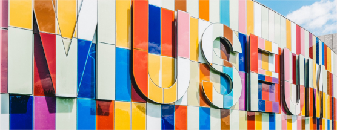

Visit us
Location
The museum is located at:
Storgata 1, 1621 Fredrikstad
Accessibility
The museum has wheelchair accessibility ramps. It also has audio guides and braille display signs for the visually impaired.
Food & Drinks
There is a café attached to the museum where you can get light lunches, soft drinks, coffee, snacks and more.
Opening hours
Monday: 10:00-16:00
Tuesday: 10:00-16:00
Wednesday: 10:00-16:00
Thursday: 10:00-16:00
Friday: 09:00-19:00
Saturday: 09:00-16:00
Sunday: 09:00-16:00
Admission
The entrance is free for all.
There are guided tours of the museum that leave every hour. These tours are 70 NOK per person and include a handy printed guide of the museum.
If you would like to organise a guided tour for your group of 6 or more people, please contact us to arrange the tour.